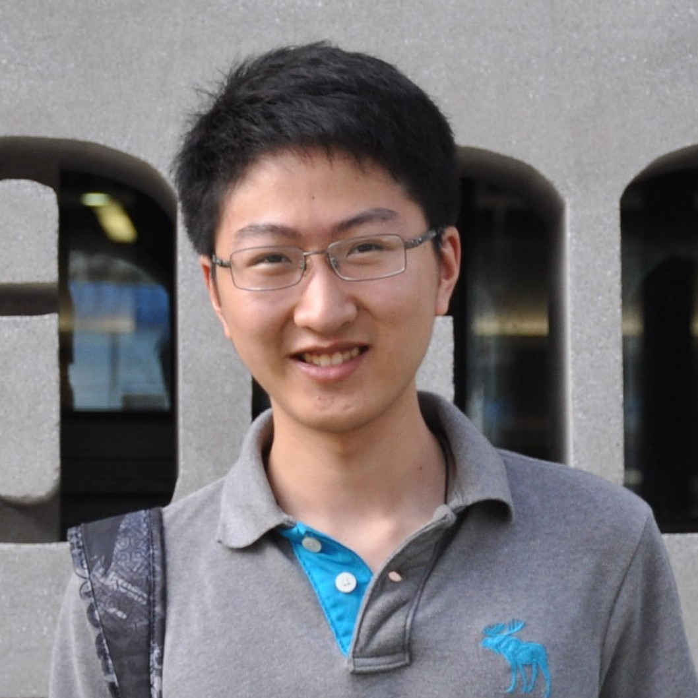

| Hanxiao Liu Palo Alto, California |  |
I train large models at Inflection.
Prior to that I was a Staff Research Scientist at Google Brain, where I developed many techniques used in Ads, Pixel, Waymo and Bard.
I also used to work at DeepMind and Citadel.
I received my Ph.D. from the School of Computer Science at Carnegie Mellon University, and B.E. from Tsinghua University.
Last compiled on Saturday 8th April, 2023 by TeX4ht.
Copyright 2023 Hanxiao Liu. All Rights Reserved.